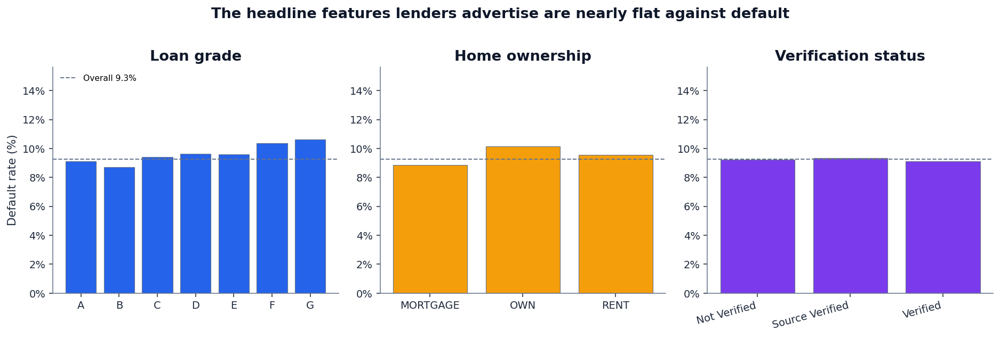
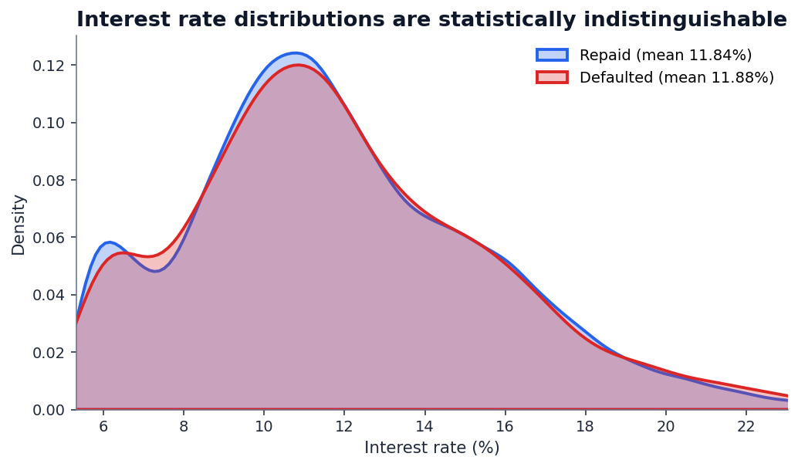
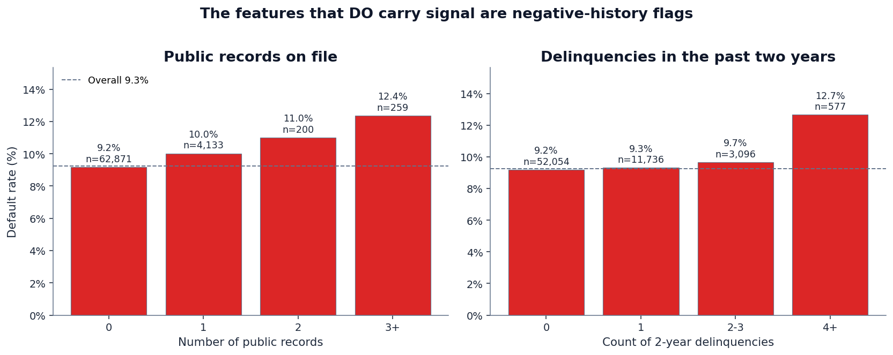
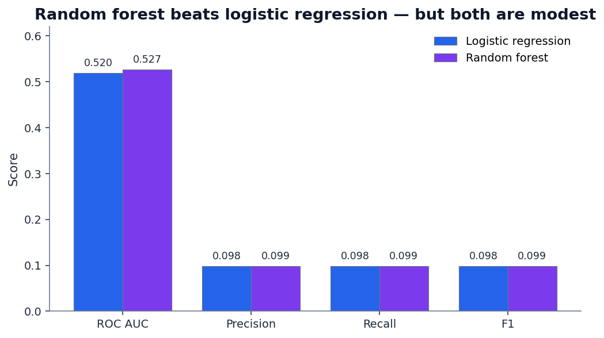
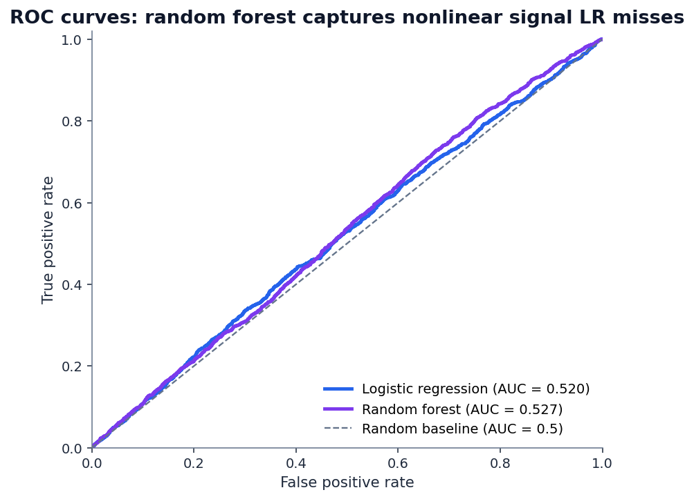
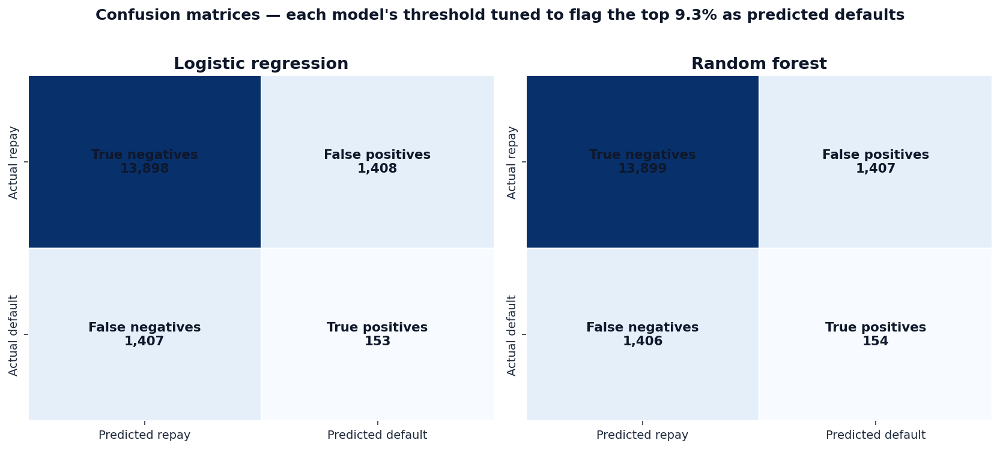
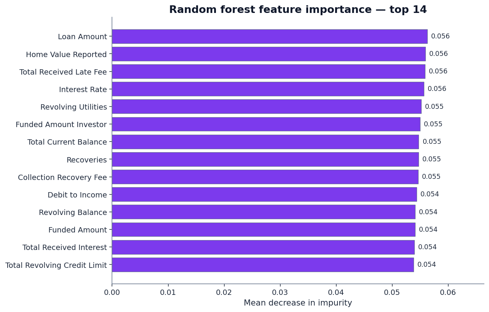

The credit-risk dataset we covered in our last post was generous. Loan grades that ran from 10% defaults at Grade A to 98% at Grade G. Loan-to-income ratios with a sharp cliff at 30%. A logistic regression got to AUC 0.871. Reading that post, you'd be forgiven for thinking credit scoring is a solved problem.
This post is about what happens when the dataset isn't generous.
We pulled the hemanthsai7/loandefault Kaggle dataset — 67,463 anonymized loan applications, 35 features per loan, a real-world 9.25% default rate. Then we trained the two standard credit scoring models: logistic regression (the model class bank regulators are most comfortable with) and random forest (the model class data scientists reach for when they want non-linear interactions).
Both models barely beat random. Here's why — and what the right lesson is.
1. The headline features are flat
If you visit any lender's FAQ page, you'll see the same four risk signals advertised: loan grade, home ownership, verification status, and interest rate. The implication is that these are how the bank decides whether you're a good risk.
In this dataset, they aren't.

For comparison: the previous credit-risk dataset showed an 88 percentage point spread between Grade A and Grade G. Here it's 1.9. The grade variable in this dataset is essentially noise — it has the column heading of a risk signal but none of the discrimination.
Home ownership tells the same story: mortgage holders default at 8.9%, outright owners at 10.2%, renters at 9.6%. Verification status is even flatter: not verified (9.2%), source verified (9.3%), verified (9.1%). None of these are signals; they're table dressings.
Interest rate is the most striking of the four:

Either way, interest rate cannot help a downstream model predict default in this dataset.
2. Where signal does live — and it's thin
If the headline features don't carry signal, what does? Two columns: Public Record and Delinquency - two years. Both are negative-history flags — incidents the borrower has already accumulated before this loan was originated.

The maximum absolute Pearson correlation between any individual feature and the default outcome is 0.011. For comparison, a feature would need a correlation of ~0.05+ to be considered weakly informative in most credit modeling contexts. Every feature in this dataset is below the "weakly informative" line.
3. Logistic regression vs. random forest
The conventional wisdom on credit modeling: start with logistic regression because regulators understand it, then move to random forest or gradient boosting if you need to capture non-linear feature interactions. Random forests, the story goes, can wring extra signal from interactions a linear model misses.
To test this, we trained both on the same 50,597-row train split (75%) and evaluated on the same 16,866-row test split (25%). To keep the comparison apples-to-apples in the face of 9.25% class imbalance, we tuned each model's probability threshold so that each one flags exactly the bottom 9.25% as predicted defaults — the same "lender risk appetite" for both.
Results:
Both models are barely above the random-coin-flip baseline. The random forest's extra capacity bought us 0.7 AUC points. At the operating threshold, that translates to one additional default caught out of every ~1,500 loans flagged.


This is what AUC 0.52 looks like. It's not zero signal — both models are statistically above the 0.5 baseline — but it's the kind of signal you'd want to verify with a much larger sample before betting any actual capital on it.
4. The confusion matrices tell the operational story
AUC summarizes the model's ranking quality. The confusion matrix shows what happens when you actually use the model to make decisions. At the prevalence-matched threshold, here's how each model performs on the 16,866-loan test set:

To put that in business terms: for every 100 loans the model flags as risky, only about 10 will actually default. The other 90 would have repaid if approved. That's a 10% precision — barely above the 9.25% you'd get by flagging loans at random.
A lender deploying this model into production wouldn't see meaningfully lower losses. They'd just reject more good borrowers.
5. What the random forest "found"
Even when the model performs poorly, its feature importance distribution tells us something. If the random forest had found a small handful of strong predictors, we'd see a sharp drop-off in the importance ranking. If it found no predictors at all, every feature would contribute roughly equally.

Loan Amount) has importance 0.056. The 14th feature has importance 0.034. That's a remarkably flat distribution — exactly what you'd expect when the model is grasping at marginal signal across many weak features rather than relying on a few strong ones.The visible features in the top of the ranking — Loan Amount, Home Value Reported, Total Received Late Fee, Interest Rate, Revolving Utilities, Funded Amount Investor — are mostly continuous variables. The model is treating them as a high-dimensional ranking problem rather than finding categorical "buckets" of high-risk borrowers, because no such buckets exist in this dataset.
That's the diagnostic. A random forest with a flat importance distribution and a sub-0.55 AUC is telling you: the answer isn't in this data.
6. The right lesson
It would be easy to read this post as a takedown of random forests, or of logistic regression, or of credit scoring in general. None of those are the right read.
The right read is: data quality and feature selection beat model choice. Every single time.
- If the features carry signal, as in the credit-risk dataset, even logistic regression — the oldest, simplest classifier in the toolkit — gets to AUC 0.87.
- If the features don't carry signal, as in this loan-default dataset, even random forest — a non-linear ensemble with hundreds of trees — barely beats random guessing.
Switching algorithms is the cheapest thing in a modeling project. It costs an hour of compute and a one-line code change. Adding a genuinely informative feature can take weeks of data engineering, vendor negotiation, or new data collection. So when teams ship a weak model and reach for a fancier algorithm before reaching for better features, they're optimizing the wrong axis.
7. Why this matters for an equity investor
QScoring isn't a credit bureau. We score equities. But the modeling discipline rhymes:
- Equity factor research spent decades arguing about whether the value, size, momentum, profitability, and investment factors are real, robust, and persistent. The factor zoo problem (Cochrane's “hundreds of significant factors discovered”) is the equity-research equivalent of an overfit model finding spurious signal in noise.
- Single-stock scoring needs features that historically separate winners from losers — measured by their information coefficient against forward returns, not their statistical fit in an in-sample regression.
- Feature engineering matters more than algorithm choice. QScoring uses a deliberately small, vetted feature set drawn from the academic factor literature, scored consistently across the universe. Adding a deep-learning ranker on top of weak features would be exactly the mistake this post is warning against.
You can browse the methodology page to see which features we use and how they're combined, or look at any individual ticker's live score to see the factor breakdown — including each factor's contribution and the underlying metric values.
See the same modeling discipline applied to stocks.
QScoring rates every U.S.-listed equity using the same evidence-first approach you just read about: vetted features, transparent weighting, no black-box models. Browse the universe or score any ticker free.
Open a free account →